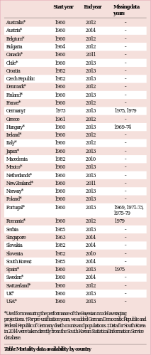

|

corpus-oa-validation/10.1016_S0140-6736(16)32381-9/tables/table1/table.svg.png
|
| Australia* Austria* Belgium* Bulgaria Canada* Chile* Croatia Czech Republic Denmark* Finland* France* Germany† Greece Hungary* Ireland* Italy* Japan* Macedonia Mexico* Netherlands* New Zealand* Norway* Poland* Portugal* Romania* Serbia Singapore Slovakia Slovenia South Korea‡ Spain* Sweden* Switzerland* UK* USA* *Used for measuring the performance of the Bayesian model averaging projections. †For pre-unification years, we added German Democratic Republic and Federal Republic of Germany death counts and populations. ‡Data for South Korea in 2014 were taken directly from the South Korean Statistical Information Service database. |
1960 1960 1960 1964 1960 1960 1982 1982 1960 1960 1960 1973 1961 1960 1960 1960 1960 1982 1960 1960 1960 1960 1960 1960 1960 1985 1963 1982 1982 1985 1960 1960 1960 1960 1960 |
2012 2014 2012 2012 2011 2013 2013 2013 2012 2013 2012 2013 2012 2013 2012 2012 2013 2010 2013 2013 2011 2013 2013 2013 2012 2013 2014 2014 2010 2014 2013 2014 2012 2013 2013 |
·· ·· ·· ·· ·· ·· ·· ·· ·· ·· ·· 1975, 1979 ·· 1969–74 ·· ·· ·· ·· ·· ·· ·· ·· ·· 1969, 1971–73, 1975–79 1979 ·· ·· ·· ·· ·· 1975 ·· ·· ·· ·· |
| Table: Mortality data availability by country |
corpus-oa-validation/10.1016_S0140-6736(16)32381-9/tables/table1/table.svg.html
|